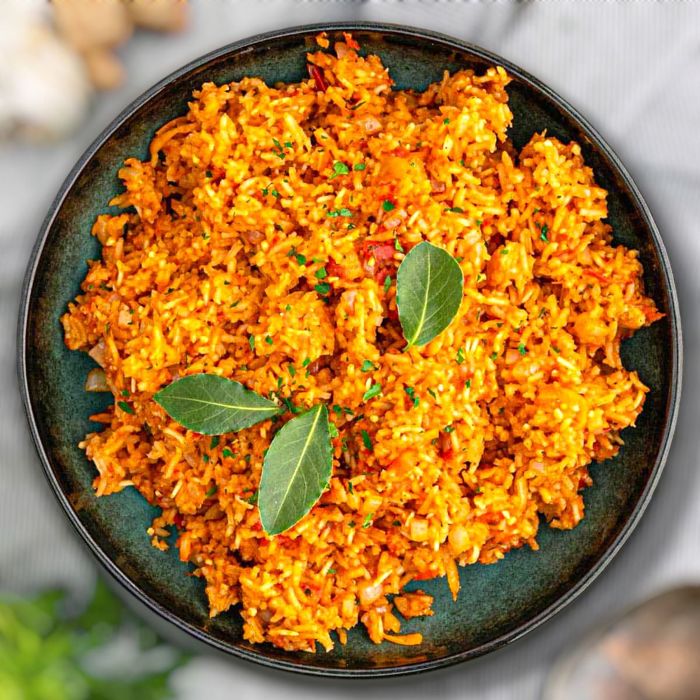

Home
Ghanaian Jollof Rice

Description
Ingredients
- 1 large onion white, diced
- 5 cloves Garlic, shredded
- 1/4 cup fresh ginger, grated
- 3 large tomatoes
- 1/2 cup cooking oil (vegetable or canola)
- 2 tsp curry powder (Jamaican style)
- 1 can of 29 oz tomato sauce
- 1 hot pepper (Habanero or scotch bonnet)
- 1 and 1/2 tsp ground chile pepper (cayenne)
- 1 and 1/2 tsp Salt
- 1 cup of water
- 1 cup of chicken stock
- 2 cups uncooked basmati or Jasmine rice, rinsed
Steps
Making the Sauce
- Dice the onions, shred the garlic, shred the ginger, and slice tomatoes then set aside.
- Add the oil to a large pot over low to medium heat and add the sliced onions to the pot and cook until transparent, about 2-3 minutes. Add in the garlic, ginger and curry powder and stir for another 3 minutes.
- Add in the sliced tomatoes and cook until soft for about 5-10 minutes, continuously stirring while cooking. Pour in the tomato sauce, whole hot pepper, ground chile pepper, and salt. Continue to stir until blended and cook on low to medium heat for about 2 hours until oil separates from the sauce. The sauce might take less than 2 hours. Be sure to not break pepper while cooking. Try to not let the sauce come to a boil, just a simmer. Be sure to keep watch and stir occasionally stir to prevent the sauce from burning. Once the oil separates from the sauce, do not remove the oil.
Adding in the rice
- In a separate large pot add 2 cups of the cooked sauce (reserve the rest), broth, water and bring it to a boil.
- Stir in the rice until well mixed, then reduce the heat to low. Cover the pot and let the rice cook for 15-20 minutes or more if needed. While the rice is cooking check on it and stir if needed. If the rice is dry add more stock or water. You can also add more sauce if needed.